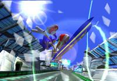
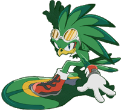

『ソニックライダーズ』が誕生するまでの道のりを教えていただけますか？
その時の苦労話などもありましたらお聞かせ願えますか？
「ソニックならではのレースゲームの形は？」
そんな疑問が『ソニックライダーズ』をつくるキッカケになりました。
元々身体能力の高いソニックをレーシングジャンルに落とすときに
「何に乗せるか？」を確立するまで随分時間がかかりました。
車など既存の乗り物を運転して…というイメージが想像しづらく、
何かしら身体能力を生かして、
且つソニックならではの爽快感が生まれる！
そんなレース展開を色々想像していく中で、
Xスポーツという分野に目を向けたことと、
当時、中 裕司COと雑談をする中で
カート世界の「タービュランス」という現象について教えて頂き、
それに注目したことによって、様々なアイディアを一つの形に纏め上げていくことができました。
“スピード感”、“ダイナミズム”、“スタイリッシュ感覚”、全ての要素がソニックのイメージにマッチし
そして「エクストリームギア（エアボード）を使って風に波乗り」という「走り方」ができたのです。
『ソニックライダーズ』は、多彩なコース設定も魅力の一つだと思うのですが、
あれだけの数を用意するにはアイディア出しの段階から、多くの苦労があったのではないでしょうか？
アイディアの源は、どこから来ているのでしょうか？
どうだっただろう？
もうハッキリは覚えていないですが、アイディアレベルでは色々なコースがでてきましたよ。
スタッフの連中にも意見を出してもらう中で、「未来感」とか「自然と文明の融合」、「現実世界から異世界への旅」
そんなテーマで取捨選択を行い、それをカラーバリエーションに沿って並べてみたんです。
そんな感じで「ヒーローズ」側のコースは揃ったのですが、実際に苦労したのは「バビロン」側ですね。
やっぱりバビロン側でもカラーバリエーションは必要だし、
同じ時間軸を進むパラレルワールドとしての位置づけからあんまり突飛した世界観は使えないし…。
結局全てにおいて決定はしないまま色々進行していましたね。
それもあってか、「放射冷却によって凍りついた基地」とか「胞子によって雪景色に彩られたジャングル」、
「日食の砂漠」など、当初のアイディアだしでは想像しなかった斬新な世界を見出すことができて
逆によかったと思う節もあります。
「ジェット・ザ・ホーク」、森本さんに似ているような気がするのですが？
そんな質問をされるとは、随分このゲームで遊んでいますね？(笑)
ご想像の通り、このジェットというキャラのモデルは僕自身です。
ジェットはソニックの“プライド”を喚起させる存在なんですよ。
ソニックというキャラクターは
自由奔放で何者にも束縛されない性格の持ち主に対して、
ソニック自らこのレースに参加する意義を持たせるには
どうすれば良いか？
それがジェットというキャラクターを考えたキッカケです。
ソニック同様に“スピード”に対するプライドを持ち
“ワル”でありながらもどこか憎めない。
ユーザーはソニックにもジェットにも共感が持てる、
そんな立ち位置を目指して性格付けをしました。
デザインとしては、このゲームのテーマでもある「重力に打ち勝つ存在」として鳥をモチーフになっています。
ジェットが見せる子供っぽい感情や憎らしい言い回しは、
負けず嫌いな自分自身の幼い頃を色々思い返して、反映させています。